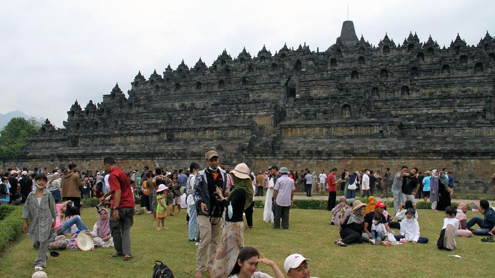
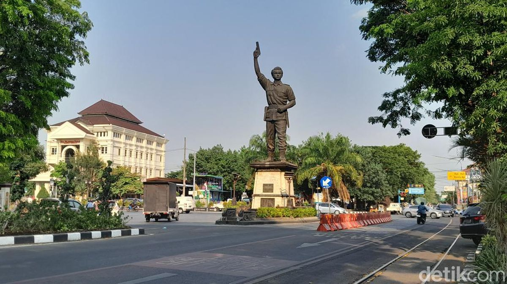

Informasi Pariwisata Terkini
Semua yang perlu Anda ketahui sebelum berkunjung

📅 15 Oktober 2025 | Acara
Dieng Culture Festival Kembali Digelar!
Catat tanggalnya! Festival tahunan pencukuran rambut gimbal akan diselenggarakan bulan depan. Pesan tiket Anda segera!
Baca Selengkapnya →
📅 01 September 2025 | Pemberitahuan
Pembatasan Akses Kunjungan di Borobudur
Demi menjaga kelestarian, jalur pendakian ke stupa utama akan dibatasi untuk periode 3 bulan ke depan.
Baca Selengkapnya →
📅 25 Agustus 2025 | Kuliner
Solo Raya Dinobatkan Sebagai Kota Gastronomi
Berkat kekayaan Sate Buntel dan Serabi Notosuman, Solo kini diakui secara nasional sebagai kota kuliner unggulan.
Baca Selengkapnya →